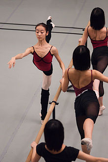

La danza de concierto, como la ópera, generalmente depende, para su forma a gran escala, de una estructura narrativa dramática. Los movimientos y gestos de la coreografía están destinados principalmente a imitar la personalidad y los objetivos de los personajes y su papel en la trama. Estos requisitos teatrales tienden a realizar movimientos más largos y libres que los habituales en los estilos de danza no narrativos. Por otro lado, el ballet blanco, desarrollado en el siglo xix, permite interludios de danza rítmica que se convirtieron en ballets totalmente "sin trama" en el siglo xx y que permitían pasos de baile rápidos y rítmicos como los del petit alegro. Un ejemplo bien conocido es la Danza de los polluelos de cisne en el segundo acto del Lago de los cisnes.
El ballet se desarrolló a partir de producciones dramáticas cortesanas de Francia e Italia de los siglos XVI y XVII y durante algún tiempo los bailarines interpretaron danzas desarrolladas a partir de las conocidas de la suite musical, todas ellas definidas por ritmos definidos, estrechamente identificados con cada danza. Estos aparecieron como danzas de personajes en la era del nacionalismo romántico.
El ballet alcanzó una moda generalizada en la era romántica, acompañado por una orquesta más grande y concepciones musicales más grandiosas que no se prestaban fácilmente a la claridad rítmica y por una danza que enfatizaba el mimo dramático. Se necesitaba un concepto más amplio de ritmo, lo que Rudolf Laban denomina "ritmo y forma" del movimiento que comunica carácter, emoción e intención, mientras que solo ciertas escenas requerían la sincronización exacta del paso y la música esencial para otros estilos de danza, de modo que, para Labán, los europeos modernos parecían totalmente incapaces de captar el significado de "movimientos rítmicos primitivos", una situación que comenzó a cambiar en el siglo xx con producciones como El rito de la primavera de Igor Stravinsky con su nuevo lenguaje rítmico que evoca sentimientos primarios de un pasado primitivo.
Los estilos de danza clásica de la India, como el ballet, suelen tener una forma dramática, de modo que existe una complementariedad similar entre la expresión narrativa y la danza "pura". En este caso, los dos se definen por separado, aunque no siempre se realizan por separado. Los elementos rítmicos, que son abstractos y técnicos, se conocen como nritta. Sin embargo, tanto esta como la danza expresiva (nritya) están estrechamente ligadas al sistema rítmico (tala). Los profesores han adaptado el sistema mnemónico rítmico hablado llamado bol a las necesidades de los bailarines.
Los estilos de danza y teatro clásicos japoneses como Kabuki y Noh, como la danza y el teatro indio, distinguen entre producciones de danza narrativa y abstracta. Las tres categorías principales de kabuki son jidaimono (histórico), sewamono (doméstico) y shosagoto (piezas de danza). De manera similar, Noh distingue entre Geki Noh, basado en el avance de la trama y la narración de la acción, y Furyū Noh, piezas de danza que involucran acrobacias, propiedades escénicas, múltiples personajes y acción escénica elaborada.
